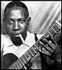
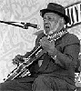
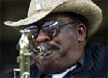
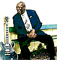
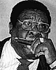
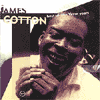
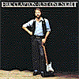

2000 |
июнь |
|
 |
 |
 |
 |
Июньский блюз: |
 |
|
БЛЮЗ У НАС
|
Наш сайт переходит на регулярный график обновлений дважды в неделю: по средам и воскресеньям.
30 июля.
В справочник "ATB's Who's Who" добавлены главы о чикагских мастерах губной гармоники:
James COTTON
Billy Boy ARNOLD
 |
26 июля. |
 |
13 июля: |
В рубрике "Who's Who" готовится справка о молодом виртуозе губной гармонике из Канады Carlos del Junco